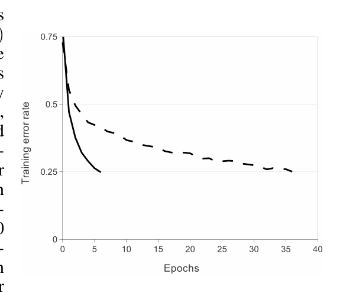
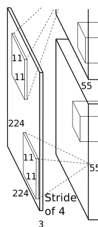
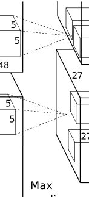
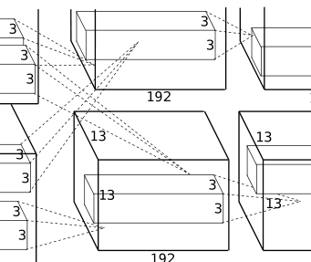
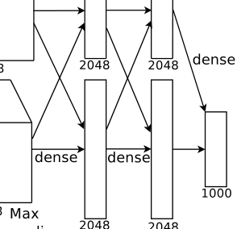
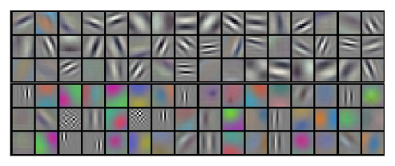
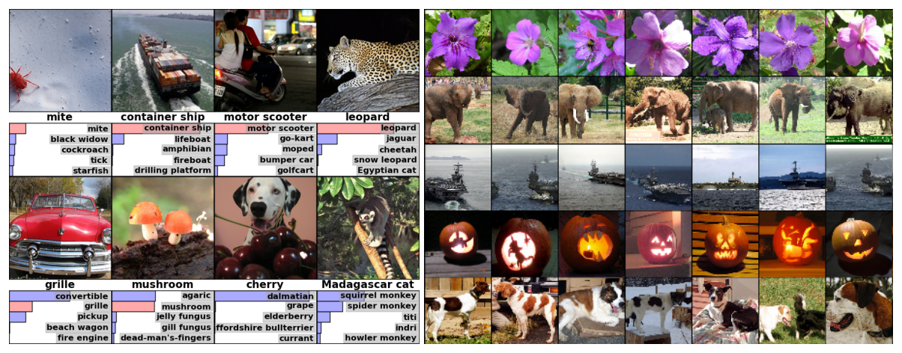

Alex Krizhevsky, Ilya Sutskever, Geoffrey E. Hinton, University of Toronto
Alex Krizhevsky、Ilya Sutskever、Geoffrey E. Hinton，多伦多大学
Alex Krizhevsky, Ilya Sutskever, Geoffrey E. Hinton, University of Toronto
Alex Krizhevsky、Ilya Sutskever、Geoffrey E. Hinton，多伦多大学
This draft keeps one English paragraph aligned with one Chinese paragraph. This paper has no public LaTeX source, so the text and figure regions were extracted from the PDF and need proof-reading. Re-run python3 ../../../tools/render_bilingual.py . after editing.
底稿按段对齐：一段英文对一段中文。这篇论文没有公开的 LaTeX 源文件，因此正文和图片区域是从 PDF 提取的，需要校对。修改后运行 python3 ../../../tools/render_bilingual.py . 重新生成阅读页。
We trained a large, deep convolutional neural network to classify the 1.2 million high-resolution images in the ImageNet LSVRC-2010 contest into the 1000 different classes. On the test data, we achieved top-1 and top-5 error rates of 37.5% and 17.0% which is considerably better than the previous state-of-the-art. The neural network, which has 60 million parameters and 650,000 neurons, consists of five convolutional layers, some of which are followed by max-pooling layers, and three fully-connected layers with a final 1000-way softmax. To make training faster, we used non-saturating neurons and a very efficient GPU implementation of the convolution operation. To reduce overfitting in the fully-connected layers we employed a recently-developed regularization method called “dropout” that proved to be very effective. We also entered a variant of this model in the ILSVRC-2012 competition and achieved a winning top-5 test error rate of 15.3%, compared to 26.2% achieved by the second-best entry.
我们训练了一个大型深度卷积神经网络，把 ImageNet LSVRC-2010 竞赛中的 120 万张高分辨率图像分到 1000 个不同类别。在测试数据上，我们取得了 37.5% 的 top-1 错误率和 17.0% 的 top-5 错误率，明显优于此前的最好结果。该神经网络有 6000 万个参数和 65 万个神经元，由五个卷积层（其中一些层之后接最大池化层）和三个全连接层组成，最后是一个 1000 路 softmax。为了加快训练，我们使用了非饱和神经元，并对卷积运算做了非常高效的 GPU 实现。为了减轻全连接层的过拟合，我们采用了一种新近提出的正则化方法，称为 “dropout”，事实证明它非常有效。我们还把该模型的一个变体送入 ILSVRC-2012 竞赛，取得了 15.3% 的获胜 top-5 测试错误率，而第二名的成绩是 26.2%。
Current approaches to object recognition make essential use of machine learning methods. To improve their performance, we can collect larger datasets, learn more powerful models, and use better techniques for preventing overfitting. Until recently, datasets of labeled images were relatively small — on the order of tens of thousands of images (e.g., NORB [16], Caltech-101/256 [8, 9], and CIFAR-10/100 [12]). Simple recognition tasks can be solved quite well with datasets of this size, especially if they are augmented with label-preserving transformations. For example, the current-best error rate on the MNIST digit-recognition task (<0.3%) approaches human performance [4]. But objects in realistic settings exhibit considerable variability, so to learn to recognize them it is necessary to use much larger training sets. And indeed, the shortcomings of small image datasets have been widely recognized (e.g., Pinto et al. [21]), but it has only recently become possible to collect labeled datasets with millions of images. The new larger datasets include LabelMe [23], which consists of hundreds of thousands of fully-segmented images, and ImageNet [6], which consists of over 15 million labeled high-resolution images in over 22,000 categories.
当前的目标识别方法本质上依赖机器学习方法。要提高其性能，我们可以收集更大规模的数据集、学习更强的模型，并使用更好的技术来防止过拟合。直到不久以前，带标注的图像数据集还相对较小——大约在数万张图像这一量级（例如 NORB [16]、Caltech-101/256 [8, 9] 以及 CIFAR-10/100 [12]）。这种规模的数据集已经足以相当好地解决简单的识别任务，尤其是在用保持标签不变的变换加以扩充时。例如，MNIST 数字识别任务上当前最好的错误率（<0.3%）已接近人类水平 [4]。但真实场景中的物体表现出相当大的变异性，因此要学会识别它们，就必须使用大得多的训练集。事实上，小规模图像数据集的不足早已被广泛认识到（例如 Pinto 等人 [21]），只是直到最近才有可能收集到包含数百万张图像的标注数据集。这些新的更大规模数据集包括 LabelMe [23]（由数十万张完全分割的图像组成）和 ImageNet [6]（包含超过 1500 万张标注高分辨率图像，分属 22000 多个类别）。
To learn about thousands of objects from millions of images, we need a model with a large learning capacity. However, the immense complexity of the object recognition task means that this problem cannot be specified even by a dataset as large as ImageNet, so our model should also have lots of prior knowledge to compensate for all the data we don’t have. Convolutional neural networks (CNNs) constitute one such class of models [16, 11, 13, 18, 15, 22, 26]. Their capacity can be controlled by varying their depth and breadth, and they also make strong and mostly correct assumptions about the nature of images (namely, stationarity of statistics and locality of pixel dependencies). Thus, compared to standard feedforward neural networks with similarly-sized layers, CNNs have much fewer connections and parameters and so they are easier to train, while their theoretically-best performance is likely to be only slightly worse.
要从数百万张图像中学习成千上万种物体，我们需要一个学习容量很大的模型。然而，目标识别任务极其复杂，即便 ImageNet 这样大的数据集也无法完全规定这个问题，因此我们的模型还应当具备大量先验知识，以弥补我们并未拥有的那些数据。卷积神经网络（convolutional neural network, CNN）就是这样一类模型 [16, 11, 13, 18, 15, 22, 26]。其容量可以通过改变深度和宽度来控制，而且它们对图像的性质做了很强、并且大体正确的假设（即统计量的平稳性，以及像素依赖的局部性）。因此，与层规模相近的标准前馈神经网络相比，CNN 的连接和参数少得多，从而更容易训练，而其理论上的最佳性能很可能只会略差一些。
Despite the attractive qualities of CNNs, and despite the relative efficiency of their local architecture, they have still been prohibitively expensive to apply in large scale to high-resolution images. Luckily, current GPUs, paired with a highly-optimized implementation of 2D convolution, are powerful enough to facilitate the training of interestingly-large CNNs, and recent datasets such as ImageNet contain enough labeled examples to train such models without severe overfitting.
尽管 CNN 具备这些吸引人的性质，尽管其局部结构相对高效，把它们大规模应用于高分辨率图像仍然昂贵得令人却步。幸运的是，当前的 GPU 配上高度优化的二维卷积实现，已经强大到足以推动对规模可观的 CNN 的训练，而 ImageNet 等近期数据集也包含足够多的标注样本，可以在不发生严重过拟合的情况下训练这类模型。
The specific contributions of this paper are as follows: we trained one of the largest convolutional neural networks to date on the subsets of ImageNet used in the ILSVRC-2010 and ILSVRC-2012 competitions [2] and achieved by far the best results ever reported on these datasets. We wrote a highly-optimized GPU implementation of 2D convolution and all the other operations inherent in training convolutional neural networks, which we make available publicly (footnote: http://code.google.com/p/cuda-convnet/). Our network contains a number of new and unusual features which improve its performance and reduce its training time, which are detailed in Section 3. The size of our network made overfitting a significant problem, even with 1.2 million labeled training examples, so we used several effective techniques for preventing overfitting, which are described in Section 4. Our final network contains five convolutional and three fully-connected layers, and this depth seems to be important: we found that removing any convolutional layer (each of which contains no more than 1% of the model’s parameters) resulted in inferior performance.
本文的具体贡献如下：我们在 ILSVRC-2010 和 ILSVRC-2012 竞赛 [2] 所使用的 ImageNet 子集上，训练了迄今最大的卷积神经网络之一，并在这些数据集上取得了远超以往所有已报告结果的成绩。我们编写了高度优化的二维卷积 GPU 实现，以及训练卷积神经网络所固有的其他全部运算，并将其公开（footnote: http://code.google.com/p/cuda-convnet/）。我们的网络包含若干新颖而不寻常的特性，它们提高了性能并缩短了训练时间，详见第 3 节。网络的规模使过拟合成为一个严重问题，即便有 120 万个标注训练样本也是如此，因此我们使用了若干有效的防过拟合技术，见第 4 节。我们最终的网络包含五个卷积层和三个全连接层，这一深度看来很重要：我们发现去掉任意一个卷积层（其中每一层所含参数都不超过模型参数的 1%）都会使性能变差。
In the end, the network’s size is limited mainly by the amount of memory available on current GPUs and by the amount of training time that we are willing to tolerate. Our network takes between five and six days to train on two GTX 580 3GB GPUs. All of our experiments suggest that our results can be improved simply by waiting for faster GPUs and bigger datasets to become available.
最终，网络的规模主要受当前 GPU 上可用的显存量，以及我们愿意承受的训练时间所限制。我们的网络在两块 GTX 580 3GB GPU 上需要五到六天才能训练完成。我们的全部实验都表明，只要等到更快的 GPU 和更大规模的数据集出现，结果就可以得到改善。
ImageNet is a dataset of over 15 million labeled high-resolution images belonging to roughly 22,000 categories. The images were collected from the web and labeled by human labelers using Amazon’s Mechanical Turk crowd-sourcing tool. Starting in 2010, as part of the Pascal Visual Object Challenge, an annual competition called the ImageNet Large-Scale Visual Recognition Challenge (ILSVRC) has been held. ILSVRC uses a subset of ImageNet with roughly 1000 images in each of 1000 categories. In all, there are roughly 1.2 million training images, 50,000 validation images, and 150,000 testing images.
ImageNet 是一个包含超过 1500 万张标注高分辨率图像的数据集，分属大约 22000 个类别。这些图像收集自互联网，并由人工标注者使用 Amazon 的 Mechanical Turk 众包工具完成标注。从 2010 年起，作为 Pascal 视觉目标挑战赛的一部分，每年举办一次名为 ImageNet 大规模视觉识别挑战赛（ImageNet Large-Scale Visual Recognition Challenge, ILSVRC）的竞赛。ILSVRC 使用 ImageNet 的一个子集，在 1000 个类别中每一类大约有 1000 张图像。合计大约有 120 万张训练图像、50000 张验证图像和 150000 张测试图像。
ILSVRC-2010 is the only version of ILSVRC for which the test set labels are available, so this is the version on which we performed most of our experiments. Since we also entered our model in the ILSVRC-2012 competition, in Section 6 we report our results on this version of the dataset as well, for which test set labels are unavailable. On ImageNet, it is customary to report two error rates: top-1 and top-5, where the top-5 error rate is the fraction of test images for which the correct label is not among the five labels considered most probable by the model.
ILSVRC-2010 是唯一公开测试集标签的 ILSVRC 版本，因此我们的大部分实验都在这一版本上进行。由于我们也把模型送入了 ILSVRC-2012 竞赛，在第 6 节中我们也报告在该版本数据集上的结果，而其测试集标签并未公开。在 ImageNet 上，惯例是报告两种错误率：top-1 和 top-5，其中 top-5 错误率是正确标签不在模型认为最可能的五个标签之中的测试图像所占的比例。
ImageNet consists of variable-resolution images, while our system requires a constant input dimensionality. Therefore, we down-sampled the images to a fixed resolution of 256 × 256. Given a rectangular image, we first rescaled the image such that the shorter side was of length 256, and then cropped out the central 256×256 patch from the resulting image. We did not pre-process the images in any other way, except for subtracting the mean activity over the training set from each pixel. So we trained our network on the (centered) raw RGB values of the pixels.
ImageNet 由分辨率不一的图像组成，而我们的系统要求固定的输入维度。因此，我们把图像下采样到固定的 256 × 256 分辨率。给定一张矩形图像，我们先缩放图像，使较短的一边长度为 256，再从所得图像中裁出中央的 256×256 图块。除此之外，我们不对图像做任何预处理，只是从每个像素中减去它在训练集上的平均激活。于是，我们是在像素的（中心化后的）原始 RGB 值上训练网络的。
The architecture of our network is summarized in Figure 2. It contains eight learned layers — five convolutional and three fully-connected. Below, we describe some of the novel or unusual features of our network’s architecture. Sections 3.1-3.4 are sorted according to our estimation of their importance, with the most important first.
我们网络的结构概括于图 2。它包含八个可学习的层——五个卷积层和三个全连接层。下面，我们描述该网络结构中一些新颖或不寻常的特性。第 3.1–3.4 节按我们对其重要性的估计排序，最重要的放在最前面。
The standard way to model a neuron’s output $f$ as a function of its input $x$ is with $f(x) = \tanh(x)$ or $f(x) = (1 + e^{-x})^{-1}$. In terms of training time with gradient descent, these saturating nonlinearities are much slower than the non-saturating nonlinearity $f(x) = \max(0, x)$. Following Nair and Hinton [20], we refer to neurons with this nonlinearity as Rectified Linear Units (ReLUs). Deep convolutional neural networks with ReLUs train several times faster than their equivalents with tanh units. This is demonstrated in Figure 1, which shows the number of iterations required to reach 25% training error on the CIFAR-10 dataset for a particular four-layer convolutional network. This plot shows that we would not have been able to experiment with such large neural networks for this work if we had used traditional saturating neuron models.
把神经元的输出 $f$ 建模为其输入 $x$ 的函数，标准做法是 $f(x) = \tanh(x)$ 或 $f(x) = (1 + e^{-x})^{-1}$。就使用梯度下降时的训练时间而言，这些饱和非线性比非饱和非线性 $f(x) = \max(0, x)$ 慢得多。沿用 Nair 与 Hinton [20] 的说法，我们把采用这一非线性的神经元称为整流线性单元（Rectified Linear Unit, ReLU）。使用 ReLU 的深度卷积神经网络，其训练速度比使用 tanh 单元的对应网络快好几倍。图 1 说明了这一点：它显示某个特定的四层卷积网络在 CIFAR-10 数据集上达到 25% 训练错误率所需的迭代次数。该图表明，如果使用传统的饱和神经元模型，我们就无法在这项工作中试验如此大的神经网络。

Figure 1: A four-layer convolutional neural network with ReLUs (solid line) reaches a 25% training error rate on CIFAR-10 six times faster than an equivalent network with tanh neurons (dashed line). The learning rates for each network were chosen independently to make training as fast as possible. No regularization of any kind was employed. The magnitude of the effect demonstrated here varies with network architecture, but networks with ReLUs consistently learn several times faster than equivalents with saturating neurons.
图 1： 使用 ReLU 的四层卷积神经网络（实线）在 CIFAR-10 上达到 25% 训练错误率的速度，比使用 tanh 神经元的等价网络（虚线）快六倍。每个网络的学习率都是独立选取的，以使训练尽可能快。没有使用任何形式的正则化。这里所展示的效应幅度随网络结构而变化，但使用 ReLU 的网络始终比使用饱和神经元的等价网络学习快好几倍。
We are not the first to consider alternatives to traditional neuron models in CNNs. For example, Jarrett et al. [11] claim that the nonlinearity $f(x) = |\tanh(x)|$ works particularly well with their type of contrast normalization followed by local average pooling on the Caltech-101 dataset. However, on this dataset the primary concern is preventing overfitting, so the effect they are observing is different from the accelerated ability to fit the training set which we report when using ReLUs. Faster learning has a great influence on the performance of large models trained on large datasets.
我们并不是第一个在 CNN 中考虑传统神经元模型之外的选择的人。例如，Jarrett 等人 [11] 声称，非线性 $f(x) = |\tanh(x)|$ 与他们那种先做对比度归一化、再做局部平均池化的做法配合，在 Caltech-101 数据集上效果特别好。然而在该数据集上，首要问题是防止过拟合，因此他们所观察到的效应，不同于我们在使用 ReLU 时所报告的、更快拟合训练集的能力。更快的学习对在大规模数据集上训练的大模型的性能有很大影响。
A single GTX 580 GPU has only 3GB of memory, which limits the maximum size of the networks that can be trained on it. It turns out that 1.2 million training examples are enough to train networks which are too big to fit on one GPU. Therefore we spread the net across two GPUs. Current GPUs are particularly well-suited to cross-GPU parallelization, as they are able to read from and write to one another’s memory directly, without going through host machine memory. The parallelization scheme that we employ essentially puts half of the kernels (or neurons) on each GPU, with one additional trick: the GPUs communicate only in certain layers. This means that, for example, the kernels of layer 3 take input from all kernel maps in layer 2. However, kernels in layer 4 take input only from those kernel maps in layer 3 which reside on the same GPU. Choosing the pattern of connectivity is a problem for cross-validation, but this allows us to precisely tune the amount of communication until it is an acceptable fraction of the amount of computation.
单块 GTX 580 GPU 只有 3GB 显存，这限制了能够在其上训练的网络的最大规模。事实表明，120 万个训练样本足以训练大到一块 GPU 放不下的网络。因此我们把网络分布到两块 GPU 上。当前的 GPU 特别适合跨 GPU 并行，因为它们能够直接读写彼此的显存，而不必经过主机内存。我们所采用的并行方案本质上是把一半的卷积核（或神经元）放在每一块 GPU 上，并另加一个技巧：GPU 只在某些层进行通信。这意味着，例如，第 3 层的卷积核接收第 2 层全部特征图（kernel map）的输入。然而，第 4 层的卷积核只接收第 3 层中位于同一块 GPU 上的那些特征图的输入。连接模式的选择是一个交叉验证问题，但这使我们能够精确地调节通信量，直到它只占计算量的一个可接受的比例。
The resultant architecture is somewhat similar to that of the “columnar” CNN employed by Cireşan et al. [5], except that our columns are not independent (see Figure 2). This scheme reduces our top-1 and top-5 error rates by 1.7% and 1.2%, respectively, as compared with a net with half as many kernels in each convolutional layer trained on one GPU. The two-GPU net takes slightly less time to train than the one-GPU net (footnote: The one-GPU net actually has the same number of kernels as the two-GPU net in the final convolutional layer. This is because most of the net’s parameters are in the first fully-connected layer, which takes the last convolutional layer as input. So to make the two nets have approximately the same number of parameters, we did not halve the size of the final convolutional layer (nor the fully-conneced layers which follow). Therefore this comparison is biased in favor of the one-GPU net, since it is bigger than “half the size” of the two-GPU net.).
所得结构与 Cireşan 等人 [5] 所采用的“柱状”CNN 有些相似，只是我们的各列并不独立（见图 2）。与在一块 GPU 上训练、每个卷积层的卷积核数量减半的网络相比，这一方案把我们的 top-1 和 top-5 错误率分别降低了 1.7% 和 1.2%。双 GPU 网络的训练时间比单 GPU 网络略短（footnote: 单 GPU 网络在最后一个卷积层上的卷积核数量实际上与双 GPU 网络相同。这是因为网络的大部分参数位于第一个全连接层，而该层以最后一个卷积层为输入。为使两个网络的参数量大致相同，我们没有把最后一个卷积层（以及其后的全连接层）的规模减半。因此这一比较偏向单 GPU 网络，因为它比双 GPU 网络的“一半规模”更大。）。
ReLUs have the desirable property that they do not require input normalization to prevent them from saturating. If at least some training examples produce a positive input to a ReLU, learning will happen in that neuron. However, we still find that the following local normalization scheme aids generalization. Denoting by $a^i_{x,y}$ the activity of a neuron computed by applying kernel $i$ at position $(x, y)$ and then applying the ReLU nonlinearity, the response-normalized activity $b^i_{x,y}$ is given by the expression
ReLU 有一个可取的性质：它们不需要输入归一化来防止饱和。只要至少有一些训练样本对某个 ReLU 产生正的输入，该神经元就会发生学习。尽管如此，我们仍然发现下面这种局部归一化方案有助于泛化。记 $a^i_{x,y}$ 为在位置 $(x, y)$ 处应用卷积核 $i$、再施加 ReLU 非线性之后得到的神经元激活，则响应归一化后的激活 $b^i_{x,y}$ 由下式给出
where the sum runs over $n$ “adjacent” kernel maps at the same spatial position, and $N$ is the total number of kernels in the layer. The ordering of the kernel maps is of course arbitrary and determined before training begins. This sort of response normalization implements a form of lateral inhibition inspired by the type found in real neurons, creating competition for big activities amongst neuron outputs computed using different kernels. The constants $k$, $n$, $\alpha$, and $\beta$ are hyper-parameters whose values are determined using a validation set; we used $k = 2$, $n = 5$, $\alpha = 10^{-4}$, and $\beta = 0.75$. We applied this normalization after applying the ReLU nonlinearity in certain layers (see Section 3.5).
其中求和遍历同一空间位置上 $n$ 个“相邻”的特征图，$N$ 是该层卷积核的总数。特征图的顺序当然是任意的，并在训练开始之前确定。这种响应归一化实现了一种受真实神经元中所见类型启发的侧抑制，使用不同卷积核计算出的神经元输出为争夺较大的激活而相互竞争。常数 $k$、$n$、$\alpha$ 和 $\beta$ 是超参数，其取值用验证集确定；我们使用 $k = 2$、$n = 5$、$\alpha = 10^{-4}$ 和 $\beta = 0.75$。我们在某些层中于施加 ReLU 非线性之后应用这一归一化（见第 3.5 节）。
This scheme bears some resemblance to the local contrast normalization scheme of Jarrett et al. [11], but ours would be more correctly termed “brightness normalization”, since we do not subtract the mean activity. Response normalization reduces our top-1 and top-5 error rates by 1.4% and 1.2%, respectively. We also verified the effectiveness of this scheme on the CIFAR-10 dataset: a four-layer CNN achieved a 13% test error rate without normalization and 11% with normalization (footnote: We cannot describe this network in detail due to space constraints, but it is specified precisely by the code and parameter files provided here: http://code.google.com/p/cuda-convnet/.).
该方案与 Jarrett 等人 [11] 的局部对比度归一化方案有些相似，但我们的方案更恰当地应称为“亮度归一化”，因为我们并不减去平均激活。响应归一化把我们的 top-1 和 top-5 错误率分别降低了 1.4% 和 1.2%。我们也在 CIFAR-10 数据集上验证了该方案的有效性：一个四层 CNN 在不做归一化时测试错误率为 13%，做归一化后为 11%（footnote: 由于篇幅所限，我们无法详细描述该网络，但这里提供的代码和参数文件精确地规定了它：http://code.google.com/p/cuda-convnet/。）。
Pooling layers in CNNs summarize the outputs of neighboring groups of neurons in the same kernel map. Traditionally, the neighborhoods summarized by adjacent pooling units do not overlap (e.g., [17, 11, 4]). To be more precise, a pooling layer can be thought of as consisting of a grid of pooling units spaced $s$ pixels apart, each summarizing a neighborhood of size $z \times z$ centered at the location of the pooling unit. If we set $s = z$, we obtain traditional local pooling as commonly employed in CNNs. If we set $s < z$, we obtain overlapping pooling. This is what we use throughout our network, with $s = 2$ and $z = 3$. This scheme reduces the top-1 and top-5 error rates by 0.4% and 0.3%, respectively, as compared with the non-overlapping scheme $s = 2$, $z = 2$, which produces output of equivalent dimensions. We generally observe during training that models with overlapping pooling find it slightly more difficult to overfit.
CNN 中的池化层汇总同一特征图上相邻一组神经元的输出。传统上，相邻池化单元所汇总的邻域互不重叠（例如 [17, 11, 4]）。更确切地说，池化层可以看作由一组池化单元组成的网格，单元之间相隔 $s$ 个像素，每个单元汇总以该池化单元所在位置为中心、大小为 $z \times z$ 的邻域。若取 $s = z$，就得到 CNN 中常用的传统局部池化。若取 $s < z$，就得到重叠池化。我们在整个网络中使用的就是这种池化，取 $s = 2$、$z = 3$。与产生同等输出维度的非重叠方案 $s = 2$、$z = 2$ 相比，该方案把 top-1 和 top-5 错误率分别降低了 0.4% 和 0.3%。我们在训练中普遍观察到，使用重叠池化的模型稍微更不容易过拟合。
Now we are ready to describe the overall architecture of our CNN. As depicted in Figure 2, the net contains eight layers with weights; the first five are convolutional and the remaining three are fully-connected. The output of the last fully-connected layer is fed to a 1000-way softmax which produces a distribution over the 1000 class labels. Our network maximizes the multinomial logistic regression objective, which is equivalent to maximizing the average across training cases of the log-probability of the correct label under the prediction distribution.
现在我们可以描述 CNN 的整体结构。如图 2 所示，网络包含八个带权重的层；前五个是卷积层，其余三个是全连接层。最后一个全连接层的输出送入一个 1000 路 softmax，后者产生关于 1000 个类别标签的分布。我们的网络最大化多项逻辑回归目标，这等价于在各个训练样本上，最大化预测分布之下正确标签的对数概率的平均值。
The kernels of the second, fourth, and fifth convolutional layers are connected only to those kernel maps in the previous layer which reside on the same GPU (see Figure 2). The kernels of the third convolutional layer are connected to all kernel maps in the second layer. The neurons in the fully-connected layers are connected to all neurons in the previous layer. Response-normalization layers follow the first and second convolutional layers. Max-pooling layers, of the kind described in Section 3.4, follow both response-normalization layers as well as the fifth convolutional layer. The ReLU non-linearity is applied to the output of every convolutional and fully-connected layer.
第二、第四和第五个卷积层的卷积核，只连接到前一层中位于同一块 GPU 上的那些特征图（见图 2）。第三个卷积层的卷积核连接到第二层的全部特征图。全连接层中的神经元连接到前一层的全部神经元。响应归一化层接在第一和第二个卷积层之后。第 3.4 节所描述的那种最大池化层，接在两个响应归一化层之后，也接在第五个卷积层之后。ReLU 非线性施加于每一个卷积层和全连接层的输出。
The first convolutional layer filters the 224×224×3 input image with 96 kernels of size 11×11×3 with a stride of 4 pixels (this is the distance between the receptive field centers of neighboring neurons in a kernel map). The second convolutional layer takes as input the (response-normalized and pooled) output of the first convolutional layer and filters it with 256 kernels of size 5 × 5 × 48. The third, fourth, and fifth convolutional layers are connected to one another without any intervening pooling or normalization layers. The third convolutional layer has 384 kernels of size 3 × 3 × 256 connected to the (normalized, pooled) outputs of the second convolutional layer. The fourth convolutional layer has 384 kernels of size 3 × 3 × 192, and the fifth convolutional layer has 256 kernels of size 3 × 3 × 192. The fully-connected layers have 4096 neurons each.
第一个卷积层用 96 个大小为 11×11×3、步长为 4 个像素的卷积核过滤 224×224×3 的输入图像（步长即同一特征图中相邻神经元感受野中心之间的距离）。第二个卷积层以第一个卷积层的（经过响应归一化并池化的）输出为输入，并用 256 个大小为 5 × 5 × 48 的卷积核进行过滤。第三、第四和第五个卷积层彼此相连，中间没有任何池化层或归一化层。第三个卷积层有 384 个大小为 3 × 3 × 256 的卷积核，连接到第二个卷积层的（归一化并池化后的）输出。第四个卷积层有 384 个大小为 3 × 3 × 192 的卷积核，第五个卷积层有 256 个大小为 3 × 3 × 192 的卷积核。全连接层各有 4096 个神经元。




Figure 2: An illustration of the architecture of our CNN, explicitly showing the delineation of responsibilities between the two GPUs. One GPU runs the layer-parts at the top of the figure while the other runs the layer-parts at the bottom. The GPUs communicate only at certain layers. The network’s input is 150,528-dimensional, and the number of neurons in the network’s remaining layers is given by 253,440–186,624–64,896–64,896–43,264–4096–4096–1000.
图 2： 我们的 CNN 结构示意图，明确标出了两块 GPU 之间的职责划分。一块 GPU 运行图中上方的各层部分，另一块运行下方的各层部分。GPU 只在某些层通信。网络的输入是 150,528 维，网络其余各层的神经元数量依次为 253,440–186,624–64,896–64,896–43,264–4096–4096–1000。
Our neural network architecture has 60 million parameters. Although the 1000 classes of ILSVRC make each training example impose 10 bits of constraint on the mapping from image to label, this turns out to be insufficient to learn so many parameters without considerable overfitting. Below, we describe the two primary ways in which we combat overfitting.
我们的神经网络结构有 6000 万个参数。尽管 ILSVRC 的 1000 个类别使每个训练样本对从图像到标签的映射施加了 10 比特的约束，这仍不足以在没有明显过拟合的情况下学会这么多参数。下面我们描述对抗过拟合的两种主要方法。
The easiest and most common method to reduce overfitting on image data is to artificially enlarge the dataset using label-preserving transformations (e.g., [25, 4, 5]). We employ two distinct forms of data augmentation, both of which allow transformed images to be produced from the original images with very little computation, so the transformed images do not need to be stored on disk. In our implementation, the transformed images are generated in Python code on the CPU while the GPU is training on the previous batch of images. So these data augmentation schemes are, in effect, computationally free.
减轻图像数据过拟合最容易、也最常用的方法，是用保持标签不变的变换来人为扩大数据集（例如 [25, 4, 5]）。我们采用两种不同形式的数据增强，二者都能以极少的计算量从原始图像生成变换后的图像，因此变换后的图像不必存到磁盘上。在我们的实现中，变换图像由 CPU 上的 Python 代码生成，与此同时 GPU 正在前一批图像上训练。因此这些数据增强方案实际上不额外占用计算。
The first form of data augmentation consists of generating image translations and horizontal reflections. We do this by extracting random 224 × 224 patches (and their horizontal reflections) from the 256×256 images and training our network on these extracted patches (footnote: This is the reason why the input images in Figure 2 are 224 × 224 × 3-dimensional.). This increases the size of our training set by a factor of 2048, though the resulting training examples are, of course, highly interdependent. Without this scheme, our network suffers from substantial overfitting, which would have forced us to use much smaller networks. At test time, the network makes a prediction by extracting five 224 × 224 patches (the four corner patches and the center patch) as well as their horizontal reflections (hence ten patches in all), and averaging the predictions made by the network’s softmax layer on the ten patches.
第一种数据增强是生成图像平移和水平反射。具体做法是从 256×256 的图像中抽取随机的 224 × 224 图块（及其水平反射），并在这些抽取出的图块上训练我们的网络（footnote: 这就是图 2 中的输入图像为 224 × 224 × 3 维的原因。）。这使训练集的规模扩大到原来的 2048 倍，当然，由此得到的训练样本高度相互依赖。若没有这一方案，我们的网络会严重过拟合，从而迫使我们使用小得多的网络。测试时，网络通过抽取五个 224 × 224 图块（四个角上的图块以及中心图块）及其水平反射（因而一共十个图块），并对网络的 softmax 层在这十个图块上做出的预测取平均，来给出预测。
The second form of data augmentation consists of altering the intensities of the RGB channels in training images. Specifically, we perform PCA on the set of RGB pixel values throughout the ImageNet training set. To each training image, we add multiples of the found principal components, with magnitudes proportional to the corresponding eigenvalues times a random variable drawn from a Gaussian with mean zero and standard deviation 0.1. Therefore to each RGB image pixel $I_{xy} = [I^{R}_{xy}, I^{G}_{xy}, I^{B}_{xy}]^{T}$ we add the following quantity:
第二种数据增强是改变训练图像中 RGB 通道的强度。具体而言，我们对整个 ImageNet 训练集中的 RGB 像素值集合做主成分分析（PCA）。对每一张训练图像，我们把所求得的主成分的若干倍加进去，其幅度正比于相应的特征值乘以一个从均值为零、标准差为 0.1 的高斯分布中抽取的随机变量。因此，对每一个 RGB 图像像素 $I_{xy} = [I^{R}_{xy}, I^{G}_{xy}, I^{B}_{xy}]^{T}$，我们加上如下的量：
where $p_i$ and $\lambda_i$ are the $i$th eigenvector and eigenvalue of the $3 \times 3$ covariance matrix of RGB pixel values, respectively, and $\alpha_i$ is the aforementioned random variable. Each $\alpha_i$ is drawn only once for all the pixels of a particular training image until that image is used for training again, at which point it is re-drawn. This scheme approximately captures an important property of natural images, namely, that object identity is invariant to changes in the intensity and color of the illumination. This scheme reduces the top-1 error rate by over 1%.
其中 $p_i$ 和 $\lambda_i$ 分别是 RGB 像素值的 $3 \times 3$ 协方差矩阵的第 $i$ 个特征向量和特征值，$\alpha_i$ 是上述随机变量。每个 $\alpha_i$ 对一张特定训练图像的全部像素只抽取一次，直到该图像再次用于训练时才重新抽取。该方案近似刻画了自然图像的一个重要性质，即物体身份对光照强度和颜色的变化保持不变。该方案把 top-1 错误率降低了 1% 以上。
Combining the predictions of many different models is a very successful way to reduce test errors [1, 3], but it appears to be too expensive for big neural networks that already take several days to train. There is, however, a very efficient version of model combination that only costs about a factor of two during training. The recently-introduced technique, called “dropout” [10], consists of setting to zero the output of each hidden neuron with probability 0.5. The neurons which are “dropped out” in this way do not contribute to the forward pass and do not participate in backpropagation. So every time an input is presented, the neural network samples a different architecture, but all these architectures share weights. This technique reduces complex co-adaptations of neurons, since a neuron cannot rely on the presence of particular other neurons. It is, therefore, forced to learn more robust features that are useful in conjunction with many different random subsets of the other neurons. At test time, we use all the neurons but multiply their outputs by 0.5, which is a reasonable approximation to taking the geometric mean of the predictive distributions produced by the exponentially-many dropout networks.
把许多不同模型的预测组合起来，是降低测试错误的一种非常成功的办法 [1, 3]，但对于已经需要好几天才能训练完的大型神经网络，这显得过于昂贵。不过，存在一种非常高效的模型组合方式，训练期间的代价大约只是原来的两倍。这种新近提出的技术称为 “dropout” [10]，其做法是以 0.5 的概率把每个隐藏神经元的输出置为零。以这种方式被“丢弃”（dropped out）的神经元不参与前向传播，也不参与反向传播。因此，每次给出一个输入时，神经网络都采样到一种不同的结构，但所有这些结构共享权重。该技术减少了神经元之间复杂的共适应，因为一个神经元不能依赖于某些特定的其他神经元一定存在。于是，它被迫去学习更加稳健的特征，这些特征要能够与其他神经元的许多不同随机子集配合起来发挥作用。测试时，我们使用全部神经元，但把它们的输出乘以 0.5，这是对数量呈指数级的 dropout 网络所产生的预测分布取几何平均的一个合理近似。
We use dropout in the first two fully-connected layers of Figure 2. Without dropout, our network exhibits substantial overfitting. Dropout roughly doubles the number of iterations required to converge.
我们在图 2 的前两个全连接层中使用 dropout。若没有 dropout，我们的网络会表现出严重的过拟合。Dropout 使收敛所需的迭代次数大约增加一倍。
We trained our models using stochastic gradient descent with a batch size of 128 examples, momentum of 0.9, and weight decay of 0.0005. We found that this small amount of weight decay was important for the model to learn. In other words, weight decay here is not merely a regularizer: it reduces the model’s training error. The update rule for weight $w$ was
我们使用随机梯度下降训练模型，批大小为 128 个样本，动量为 0.9，权重衰减为 0.0005。我们发现，这一很小的权重衰减对模型的学习很重要。换句话说，这里的权重衰减不仅仅是一个正则项：它降低了模型的训练误差。权重 $w$ 的更新规则为
where $i$ is the iteration index, $v$ is the momentum variable, $\epsilon$ is the learning rate, and $\left\langle \left.\frac{\partial L}{\partial w}\right|_{w_i} \right\rangle_{D_i}$ is the average over the $i$th batch $D_i$ of the derivative of the objective with respect to $w$, evaluated at $w_i$.
其中 $i$ 是迭代序号，$v$ 是动量变量，$\epsilon$ 是学习率，而 $\left\langle \left.\frac{\partial L}{\partial w}\right|_{w_i} \right\rangle_{D_i}$ 是目标函数关于 $w$ 的导数在 $w_i$ 处取值后、在第 $i$ 个批次 $D_i$ 上所取的平均。
We initialized the weights in each layer from a zero-mean Gaussian distribution with standard deviation 0.01. We initialized the neuron biases in the second, fourth, and fifth convolutional layers, as well as in the fully-connected hidden layers, with the constant 1. This initialization accelerates the early stages of learning by providing the ReLUs with positive inputs. We initialized the neuron biases in the remaining layers with the constant 0.
我们把每一层的权重初始化为均值为零、标准差为 0.01 的高斯分布。我们把第二、第四和第五个卷积层以及全连接隐藏层中的神经元偏置初始化为常数 1。这一初始化通过给 ReLU 提供正的输入，加快了学习的早期阶段。我们把其余层中的神经元偏置初始化为常数 0。
We used an equal learning rate for all layers, which we adjusted manually throughout training. The heuristic which we followed was to divide the learning rate by 10 when the validation error rate stopped improving with the current learning rate. The learning rate was initialized at 0.01 and reduced three times prior to termination. We trained the network for roughly 90 cycles through the training set of 1.2 million images, which took five to six days on two NVIDIA GTX 580 3GB GPUs.
我们对所有层使用相同的学习率，并在整个训练过程中手动调整。我们所遵循的启发式规则是：当验证错误率在当前学习率下不再改善时，把学习率除以 10。学习率初始化为 0.01，并在终止之前降低了三次。我们让网络在包含 120 万张图像的训练集上大约循环 90 个周期，这在两块 NVIDIA GTX 580 3GB GPU 上耗时五到六天。

Figure 3: 96 convolutional kernels of size 11×11×3 learned by the first convolutional layer on the 224×224×3 input images. The top 48 kernels were learned on GPU 1 while the bottom 48 kernels were learned on GPU 2. See Section 6.1 for details.
图 3： 第一个卷积层在 224×224×3 的输入图像上学习到的 96 个大小为 11×11×3 的卷积核。上方 48 个卷积核在 GPU 1 上学习得到，下方 48 个卷积核在 GPU 2 上学习得到。详见第 6.1 节。
Our results on ILSVRC-2010 are summarized in Table 1. Our network achieves top-1 and top-5 test set error rates of 37.5% and 17.0% (footnote: The error rates without averaging predictions over ten patches as described in Section 4.1 are 39.0% and 18.3%.). The best performance achieved during the ILSVRC-2010 competition was 47.1% and 28.2% with an approach that averages the predictions produced from six sparse-coding models trained on different features [2], and since then the best published results are 45.7% and 25.7% with an approach that averages the predictions of two classifiers trained on Fisher Vectors (FVs) computed from two types of densely-sampled features [24].
我们在 ILSVRC-2010 上的结果概括于表 1。我们的网络在测试集上取得的 top-1 和 top-5 错误率分别为 37.5% 和 17.0%（footnote: 若不按第 4.1 节所述对十个图块上的预测取平均，错误率为 39.0% 和 18.3%。）。ILSVRC-2010 竞赛期间取得的最好成绩是 47.1% 和 28.2%，其方法对六个在不同特征上训练的稀疏编码模型所产生的预测取平均 [2]；此后已发表的最好结果是 45.7% 和 25.7%，其方法对两个分类器的预测取平均，这两个分类器训练于由两类稠密采样特征计算出的 Fisher 向量（Fisher Vector, FV）[24]。
Table 1: Comparison of results on ILSVRC-2010 test set. In italics are best results achieved by others.
表 1： ILSVRC-2010 测试集上的结果比较。以*斜体*标出的是其他人取得的最好结果。
We also entered our model in the ILSVRC-2012 competition and report our results in Table 2. Since the ILSVRC-2012 test set labels are not publicly available, we cannot report test error rates for all the models that we tried. In the remainder of this paragraph, we use validation and test error rates interchangeably because in our experience they do not differ by more than 0.1% (see Table 2). The CNN described in this paper achieves a top-5 error rate of 18.2%. Averaging the predictions of five similar CNNs gives an error rate of 16.4%. Training one CNN, with an extra sixth convolutional layer over the last pooling layer, to classify the entire ImageNet Fall 2011 release (15M images, 22K categories), and then “fine-tuning” it on ILSVRC-2012 gives an error rate of 16.6%. Averaging the predictions of two CNNs that were pre-trained on the entire Fall 2011 release with the aforementioned five CNNs gives an error rate of 15.3%. The second-best contest entry achieved an error rate of 26.2% with an approach that averages the predictions of several classifiers trained on FVs computed from different types of densely-sampled features [7].
我们也将模型送入 ILSVRC-2012 竞赛，并在表 2 中报告结果。由于 ILSVRC-2012 的测试集标签并未公开，我们无法报告所尝试的全部模型的测试错误率。在本段其余部分，我们把验证错误率和测试错误率互换使用，因为根据我们的经验，二者相差不超过 0.1%（见表 2）。本文所描述的 CNN 取得 18.2% 的 top-5 错误率。对五个相似 CNN 的预测取平均，错误率为 16.4%。训练一个 CNN，在最后一个池化层之上再增加第六个卷积层，用来对整个 ImageNet 2011 年秋季发布版（15M 张图像、22K 个类别）进行分类，然后在 ILSVRC-2012 上对其“微调”（fine-tuning），错误率为 16.6%。把两个曾在整个 2011 年秋季发布版上预训练的 CNN 的预测，与前述五个 CNN 的预测一起取平均，错误率为 15.3%。竞赛第二名的错误率为 26.2%，其方法对若干分类器的预测取平均，这些分类器训练于由不同类型的稠密采样特征计算出的 FV [7]。
Table 2: Comparison of error rates on ILSVRC-2012 validation and test sets. In italics are best results achieved by others. Models with an asterisk* were “pre-trained” to classify the entire ImageNet 2011 Fall release. See Section 6 for details.
表 2： ILSVRC-2012 验证集与测试集上的错误率比较。以*斜体*标出的是其他人取得的最好结果。带星号 * 的模型经过“预训练”，用于对整个 ImageNet 2011 年秋季发布版进行分类。详见第 6 节。
Finally, we also report our error rates on the Fall 2009 version of ImageNet with 10,184 categories and 8.9 million images. On this dataset we follow the convention in the literature of using half of the images for training and half for testing. Since there is no established test set, our split necessarily differs from the splits used by previous authors, but this does not affect the results appreciably. Our top-1 and top-5 error rates on this dataset are 67.4% and 40.9%, attained by the net described above but with an additional, sixth convolutional layer over the last pooling layer. The best published results on this dataset are 78.1% and 60.9% [19].
最后，我们也报告在 ImageNet 2009 年秋季版本上的错误率，该版本有 10,184 个类别和 890 万张图像。在该数据集上，我们遵循文献中的惯例，用一半图像做训练、一半图像做测试。由于没有既定的测试集，我们的划分必然与先前作者所用的划分不同，但这并不明显影响结果。我们在该数据集上的 top-1 和 top-5 错误率为 67.4% 和 40.9%，由上面所描述的网络再在最后一个池化层之上增加第六个卷积层而取得。该数据集上已发表的最好结果为 78.1% 和 60.9% [19]。
Figure 3 shows the convolutional kernels learned by the network’s two data-connected layers. The network has learned a variety of frequency- and orientation-selective kernels, as well as various colored blobs. Notice the specialization exhibited by the two GPUs, a result of the restricted connectivity described in Section 3.5. The kernels on GPU 1 are largely color-agnostic, while the kernels on on GPU 2 are largely color-specific. This kind of specialization occurs during every run and is independent of any particular random weight initialization (modulo a renumbering of the GPUs).
图 3 展示了网络中两个与数据相连的层所学习到的卷积核。网络学到了多种具有频率选择性和方向选择性的卷积核，以及各种彩色斑块。请注意两块 GPU 所表现出的专门化，这是第 3.5 节所述受限连接的结果。GPU 1 上的卷积核大体与颜色无关，而 GPU 2 上的卷积核大体是针对颜色的。这种专门化在每一次运行中都会出现，并且与任何特定的随机权重初始化无关（最多只是两块 GPU 的编号对调）。

Figure 4: (Left) Eight ILSVRC-2010 test images and the five labels considered most probable by our model. The correct label is written under each image, and the probability assigned to the correct label is also shown with a red bar (if it happens to be in the top 5). (Right) Five ILSVRC-2010 test images in the first column. The remaining columns show the six training images that produce feature vectors in the last hidden layer with the smallest Euclidean distance from the feature vector for the test image.
图 4：（左）八张 ILSVRC-2010 测试图像，以及我们的模型认为最可能的五个标签。正确标签写在每张图像下方，分配给正确标签的概率也用红色条标出（如果它恰好位于前 5 名之中）。（右）第一列是五张 ILSVRC-2010 测试图像。其余各列给出六张训练图像，它们在最后一个隐藏层产生的特征向量与该测试图像的特征向量之间的欧氏距离最小。
In the left panel of Figure 4 we qualitatively assess what the network has learned by computing its top-5 predictions on eight test images. Notice that even off-center objects, such as the mite in the top-left, can be recognized by the net. Most of the top-5 labels appear reasonable. For example, only other types of cat are considered plausible labels for the leopard. In some cases (grille, cherry) there is genuine ambiguity about the intended focus of the photograph.
在图 4 的左半部分，我们通过计算网络在八张测试图像上的 top-5 预测，定性地评估网络学到了什么。请注意，即便是不在画面中央的物体，例如左上角的螨虫，也能被网络识别出来。大多数 top-5 标签看来是合理的。例如，对于豹，只有其他种类的猫才被认为是说得通的标签。在某些情况下（格栅、樱桃），照片真正想要表现的焦点确实存在歧义。
Another way to probe the network’s visual knowledge is to consider the feature activations induced by an image at the last, 4096-dimensional hidden layer. If two images produce feature activation vectors with a small Euclidean separation, we can say that the higher levels of the neural network consider them to be similar. Figure 4 shows five images from the test set and the six images from the training set that are most similar to each of them according to this measure. Notice that at the pixel level, the retrieved training images are generally not close in L2 to the query images in the first column. For example, the retrieved dogs and elephants appear in a variety of poses. We present the results for many more test images in the supplementary material.
探测该网络视觉知识的另一种方法，是考察一张图像在最后一个 4096 维隐藏层上所引起的特征激活。如果两张图像产生的特征激活向量之间的欧氏距离很小，我们就可以说，神经网络的较高层认为它们是相似的。图 4 给出测试集中的五张图像，以及按这一度量与其中每一张最相似的、来自训练集的六张图像。请注意，在像素层面上，检索到的训练图像与第一列中的查询图像在 L2 距离上一般并不接近。例如，检索到的狗和大象以各种各样的姿态出现。我们在补充材料中给出了更多测试图像上的结果。
Computing similarity by using Euclidean distance between two 4096-dimensional, real-valued vectors is inefficient, but it could be made efficient by training an auto-encoder to compress these vectors to short binary codes. This should produce a much better image retrieval method than applying autoencoders to the raw pixels [14], which does not make use of image labels and hence has a tendency to retrieve images with similar patterns of edges, whether or not they are semantically similar.
用两个 4096 维实值向量之间的欧氏距离来计算相似度是低效的，但可以通过训练一个自编码器、把这些向量压缩成短的二进制码，从而使它变得高效。这应当能产生一种比把自编码器用于原始像素好得多的图像检索方法 [14]，后者并不利用图像标签，因而倾向于检索出具有相似边缘模式的图像，无论它们在语义上是否相似。
Our results show that a large, deep convolutional neural network is capable of achieving record-breaking results on a highly challenging dataset using purely supervised learning. It is notable that our network’s performance degrades if a single convolutional layer is removed. For example, removing any of the middle layers results in a loss of about 2% for the top-1 performance of the network. So the depth really is important for achieving our results.
我们的结果表明，一个大型的深度卷积神经网络能够仅凭监督学习，就在一个极具挑战性的数据集上取得破纪录的结果。值得注意的是，如果去掉任意一个卷积层，网络的性能就会下降。例如，去掉任何一个中间层，都会使网络的 top-1 性能损失大约 2%。因此，深度对于取得我们的结果确实很重要。
To simplify our experiments, we did not use any unsupervised pre-training even though we expect that it will help, especially if we obtain enough computational power to significantly increase the size of the network without obtaining a corresponding increase in the amount of labeled data. Thus far, our results have improved as we have made our network larger and trained it longer but we still have many orders of magnitude to go in order to match the infero-temporal pathway of the human visual system. Ultimately we would like to use very large and deep convolutional nets on video sequences where the temporal structure provides very helpful information that is missing or far less obvious in static images.
为了简化实验，我们没有使用任何无监督预训练，尽管我们预期它会有帮助，尤其是当我们获得足够的计算能力、从而能显著增大网络规模，却没有相应地增加标注数据量的时候。到目前为止，随着我们把网络做得更大、训练得更久，结果一直在改善，但要与人类视觉系统的下颞叶通路相匹配，我们还有许多个数量级的差距。最终，我们希望在视频序列上使用非常大而深的卷积网络，因为时间结构提供了静态图像中所缺失、或者远不那么明显的非常有用的信息。